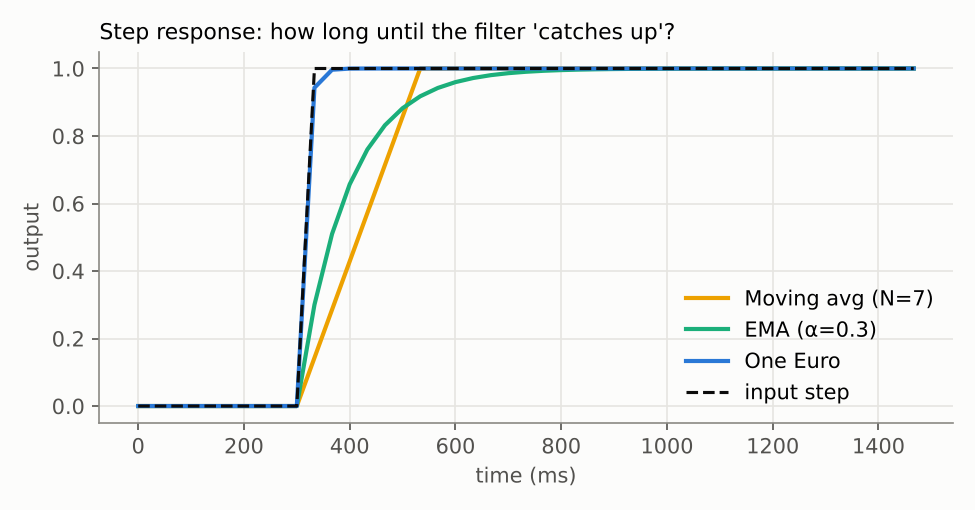

Simple Smoothing Methods
3.1 Moving average
The causal moving average (MA) of window N outputs the mean of the most recent N samples:
ŷk = (1/N) · Σi=0…N−1 zk−iIf the noise is white with variance σ², averaging N samples cuts the variance to σ²/N, so N = 7 reduces jitter amplitude by √7 ≈ 2.6×. The price is group delay: the output represents the middle of the window, so it is always (N−1)/2 frames late. At 30 fps and N = 7 that is 3 frames, or 100 ms. Our experiment measures exactly 100 ms of lag for this filter (Section 9).
class MovingAverage:
def __init__(self, window=5):
self.window, self.buf = window, []
def filter(self, x, t=None):
self.buf.append(x)
if len(self.buf) > self.window:
self.buf.pop(0)
return sum(self.buf) / len(self.buf)A variant worth knowing is the moving median. It has the same lag, but a single spike cannot pull the median far, so it removes one-frame outliers that an average would only spread out over N frames.
3.2 Exponential moving average
The exponential moving average (EMA, also called a first-order low-pass or exponential smoothing) keeps one value of state:
ŷk = α · zk + (1 − α) · ŷk−1, 0 < α ≤ 1Unrolling the recursion shows it is a weighted average of all past samples with weights α(1−α)i that shrink exponentially. Small α means heavy smoothing. The average delay is about (1−α)/α frames: α = 0.3 gives about 2.3 frames (78 ms at 30 fps). α can also be set from a cutoff frequency fc and the sample period Te:
τ = 1 / (2π fc), α = 1 / (1 + τ / Te)This form is important because it handles variable frame rates: if a phone drops a frame, Te gets bigger and α grows automatically. It is also the exact building block the One Euro filter uses in Section 4.
class EMA:
def __init__(self, alpha=0.3):
self.alpha, self.y = alpha, None
def filter(self, x, t=None):
self.y = x if self.y is None else self.alpha*x + (1-self.alpha)*self.y
return self.y
3.3 Gaussian and Savitzky–Golay filtering (offline)
If the whole video is recorded first (for example, a coach reviewing a set after it ends), we can use frames on both sides of each sample. A Gaussian filter convolves the signal with a centered Gaussian kernel of width σ frames. Because the kernel is symmetric, it has zero phase delay: peaks stay where they are.
The Savitzky–Golay filter fits a low-order polynomial (often cubic) to a sliding window by least squares and takes the polynomial's value at the center [5]. It is equivalent to convolution with a fixed set of coefficients, so it is fast, and because a cubic can bend, it preserves the height of peaks (like the bottom of a squat) better than a plain average. It can also return smoothed derivatives directly, which is convenient for velocity.
from scipy.ndimage import gaussian_filter1d
from scipy.signal import savgol_filter
smooth_g = gaussian_filter1d(x, sigma=2.0, mode="nearest")
smooth_sg = savgol_filter(x, window_length=11, polyorder=3)
vel_sg = savgol_filter(x, 11, 3, deriv=1, delta=1/30) # smoothed velocityThese offline filters produced the lowest angle error in our experiment (2.3–2.6° RMSE vs. 3.0° for the best causal filter). They set a useful upper bound: no live filter can beat a good zero-lag offline filter, so they tell you how much room for improvement is left.
3.4 Advantages and limitations for real-time video
| Filter | Causal (live)? | Lag | Spikes | Cost per sample | Main weakness |
|---|---|---|---|---|---|
| Moving average | Yes | (N−1)/2 frames | spreads | O(1) with running sum | Fixed lag; flattens squat bottoms |
| Moving median | Yes | (N−1)/2 frames | removes | O(N log N) | Same lag, blocky output |
| EMA | Yes | ≈ (1−α)/α frames | spreads | O(1), one value | One α for all speeds |
| Gaussian | No | 0 | spreads | O(kernel) | Needs future frames |
| Savitzky–Golay | No | 0 | spreads | O(window) | Needs future frames; can ring at edges |
Summary
- Moving average: variance ÷ N, lag (N−1)/2 frames. A median variant removes spikes.
- EMA: one line of code, lag ≈ (1−α)/α frames; α can be computed from a cutoff frequency.
- Gaussian and Savitzky–Golay are zero-lag but offline only; use them for post-workout analysis and as a quality reference.